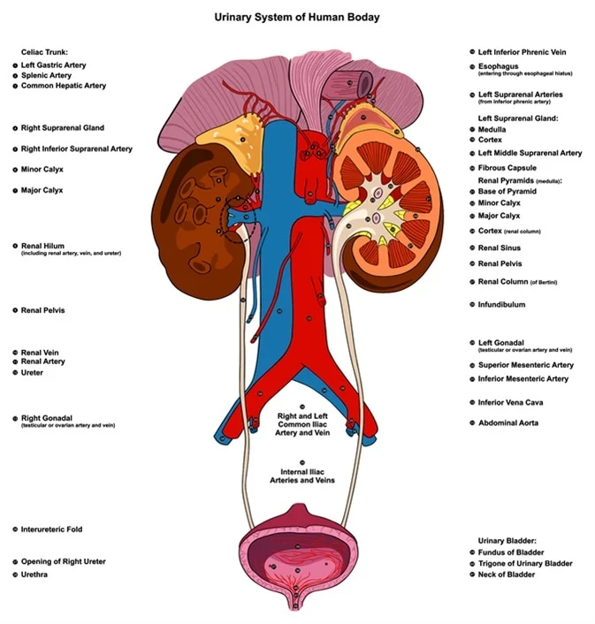
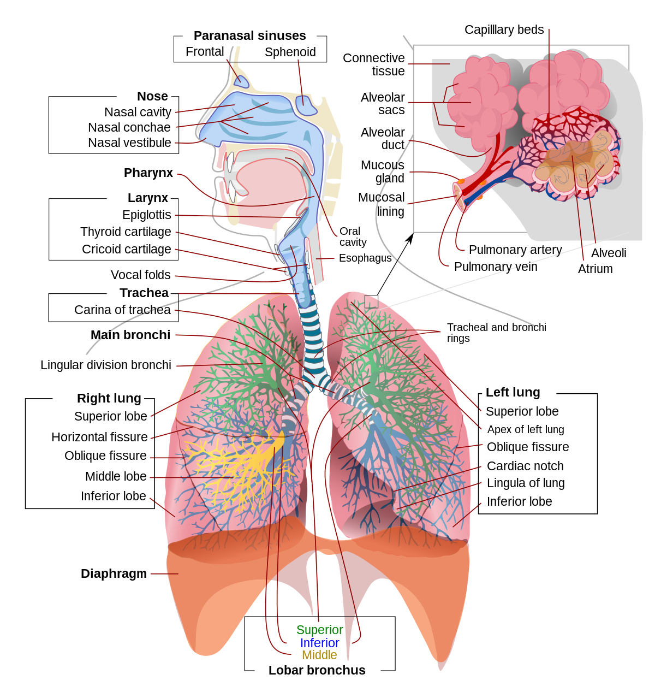
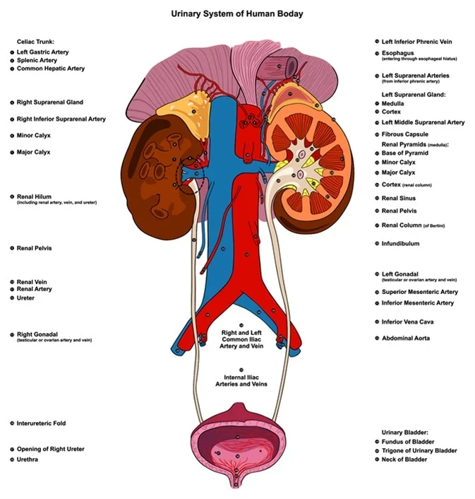
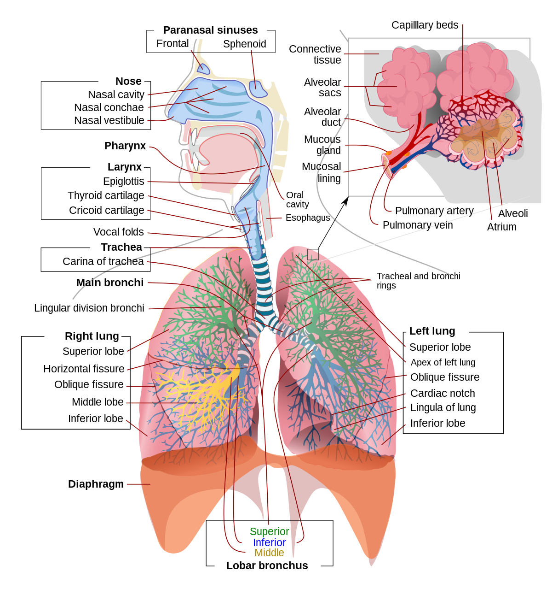

Different Body System
- Digestive System
- The human digestive system consists of the gastrointestinal tract plus the accessory organs of digestion (the tongue, salivary glands, pancreas, liver, and gallbladder). Digestion involves the breakdown of food into smaller and smaller components, until they can be absorbed and assimilated into the body. The process of digestion has three stages: the cephalic phase, the gastric phase, and the intestinal phase.
- Respiratory System
- The respiratory systemis the network of orgams and tissues that help you breathe. It includes your airways, lungs and blood vessels. The muscles that power your lungs are also part of the respiratory system. These parts work together to move oxygen throughout the body and clean out waste gases like carbon dioxide.
- Urinary System
- The urinary system includes the kidneys, ureters, bladder and urethra. This system filters your blood, removing waste and excess water. This waste becomes urine. The most common urinary issues are bladder infections and urinary tract infections (UTIs).
ß
 


